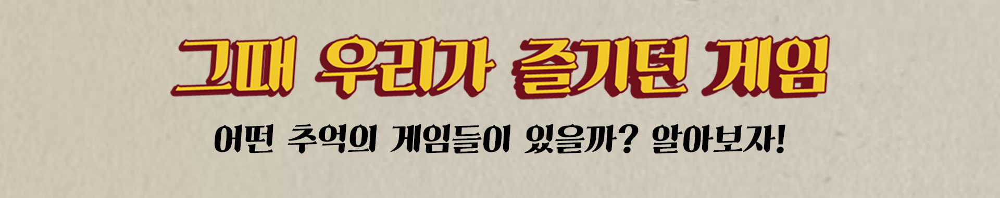
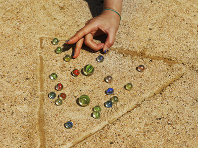
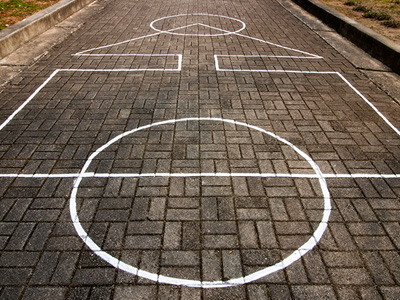
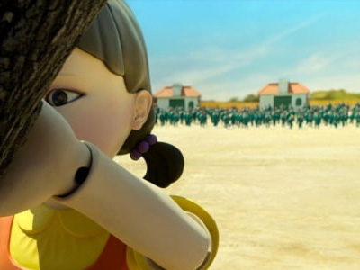
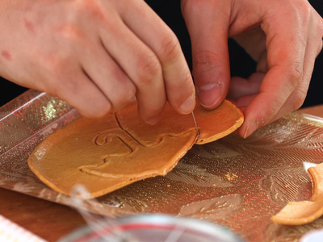

그때 그 추억
그때 그 노래
그때 그 패션
복고 드라마
삐삐 체험

추억의 게임
이미지에 올려 어떤 게임인지 확인해봐요!

구슬 치기
유리구슬을 땅에 던져놓고 다른 구슬로 맞춰 따먹는 어린이놀이
구슬을 맞히기 위해서는 발바닥으로 밀어 차거나,
손가락으로 퉁기거나 선 채로 던지기도 한다.

오징어 게임
오징어는 여러 사람이 하는 놀이로
공격과 수비의 두 편으로 나누어 경기를 진행하게 된다
공격자가 공격 목적을 달성하거나 서로 상대편을 전멸시키는 것
공격 시에는 한 발로만 이동할 수 있다.

무궁화 꽃이 피었습니다
술래가 벽을 보고 '무궁화 꽃이 피었습니다'를 외치다가
구호가 끝남과 동시에 뒤를 돌아보고
움직이는 사람이 있으면 잡아낸다.

달고나 뽑기
달고나 또는 뽑기는 설탕에 베이킹소다를 넣고
막대로 저어서 만드는 한국의 사탕
달고나 틀 모양대로 망가트리지 않고 모양을 그대로 유지해야함